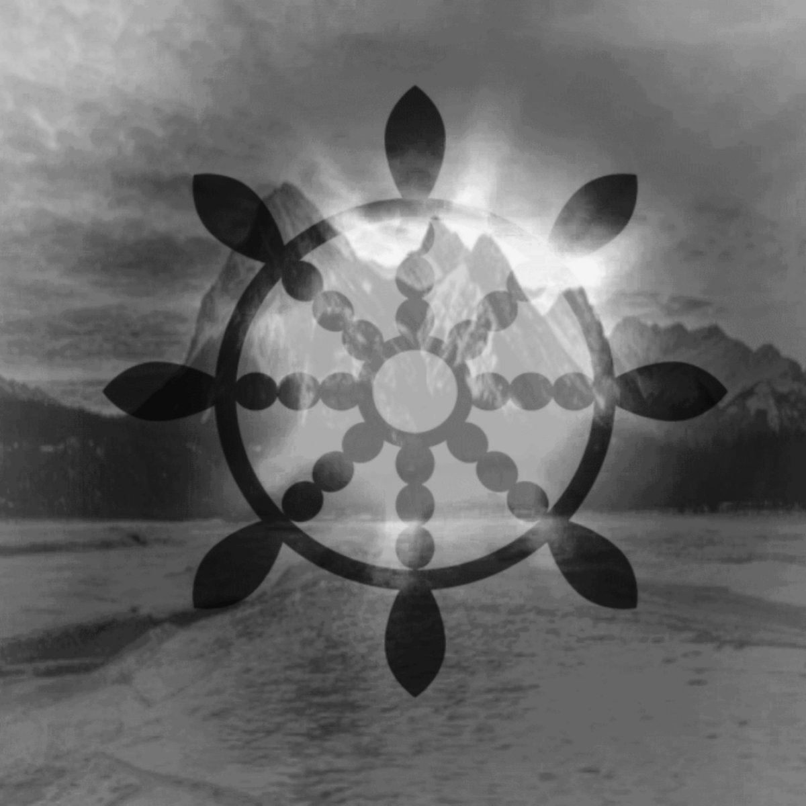

VESEN

08風

About
Vesen, formerly known as 08風, is an experimental electronic/acoustic ambient artist from the frozen deserts of the western United States. The earliest influences on Vesen's work can be traced back to the internet micro-genre known as dreampunk, with artists such as 2814, HKE, t e l e p a t h, Chungking Mansions, Remember, Facechain, and more serving as his inspiration. Initially attempting to imitate the dreamy, heavy, cyberpunk sound of 2814, he soon found his style and skillset more suited to a spiritual, emotionally charged sound that attempted to paint the beauties of the world around him and the psychological landscapes within. After years of exploring these landscapes, the artist made an official departure from his old "08風" alias and adopted the new "Vesen", signifying his migration from electronic-oriented ambeince into a world of acoustic, yet equally ethereal, sounds. Norwegian for "being", "Vesen" maintains the same surreal approach, but opts for a more wholistic sound, employing a blend of natural string instruments and electronic synthesizers.